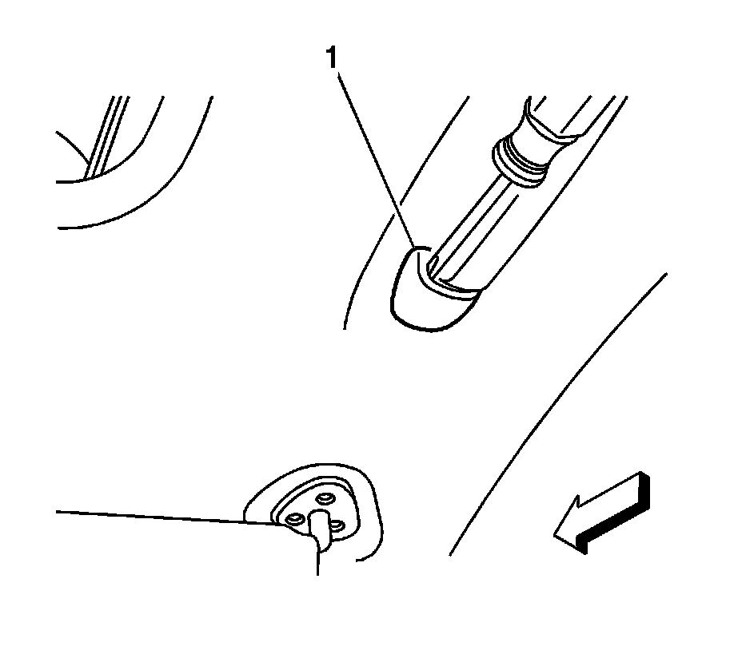
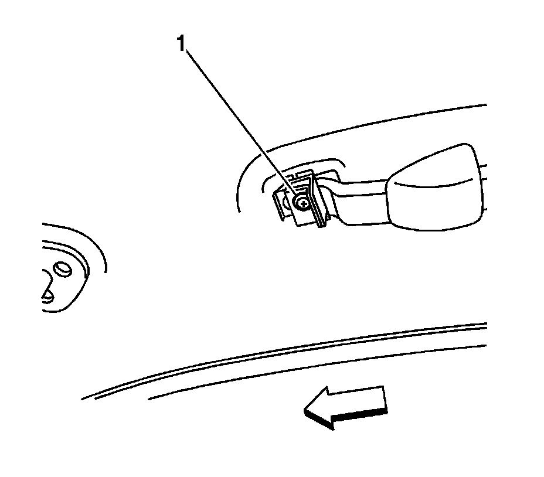

Front Assist Handle Replacement
Front Assist Handle Replacement
Removal Procedure

1. Using a flat-bladed tool, gently pry out the outer edge of the escutcheons (1) and push inward.
2. Slide the escutcheon toward the center of the assist handle.

3. Remove the 2 screws (1) that retain the assist handle to the roof panel.
4. Remove the assist handle.
Installation Procedure
1. Position the assist handle to the headliner.
Notice: Refer to Fastener Notice .
2. Install the two fasteners (1) to retain the assist handle to the roof panel.
Tighten the 2 screws to 2 N.m (18 lb in).
3. Secure the assist handle escutheons (1) to the outer edges of the assist handle.
4. Snap the escutheons in place to secure.